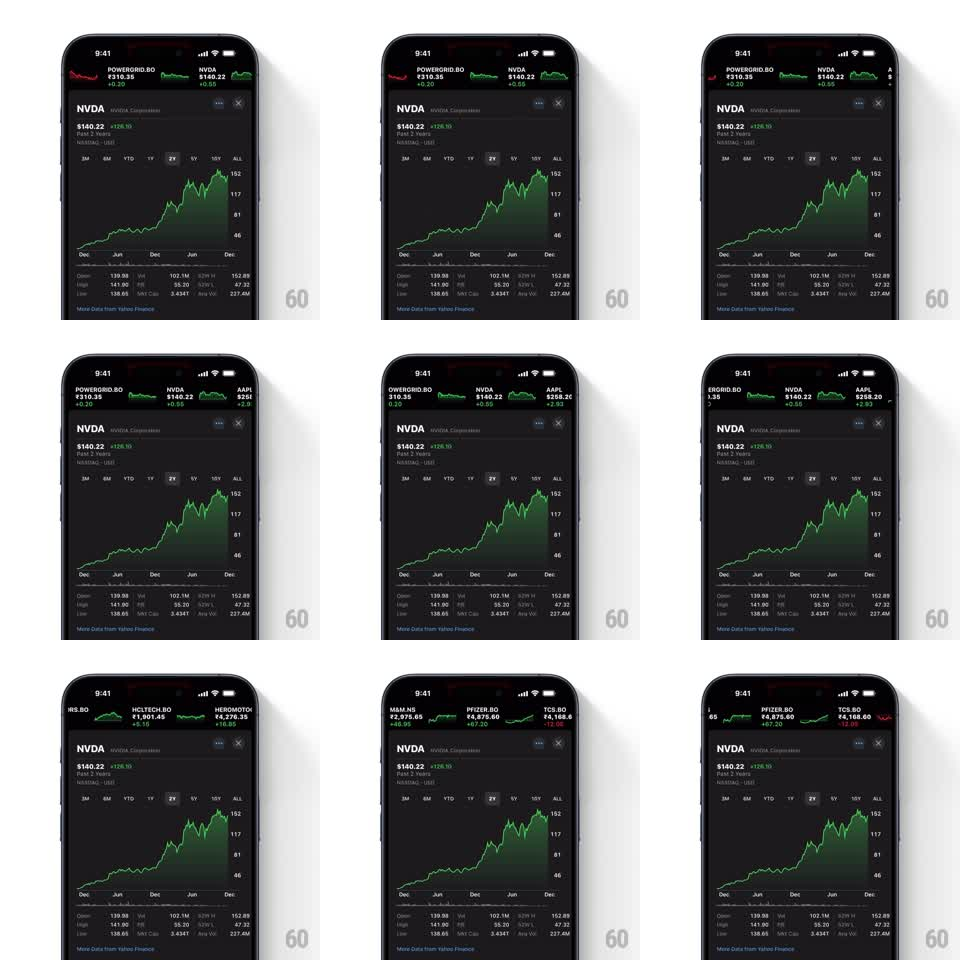

Media
Frame-by-frame

Rebuild this interaction 1:1: Apple Stocks' ticker tape - the symbol strip above the chart scrolls horizontally with finger-following momentum and a smooth deceleration glide.

Rebuild this interaction 1:1: Apple Stocks' ticker tape - the symbol strip above the chart scrolls horizontally with finger-following momentum and a smooth deceleration glide. ## Integration Integration: stack-agnostic spec - springs given as stiffness/damping, timed motions as duration + curve; map every value to your framework and animation library of choice. ## Scene A stock detail screen (NVDA with price, delta, range selector, and candlestick-area chart). Above it, a horizontal ticker tape of watchlist symbols - each a compact tile with symbol, price, change, and a tiny sparkline (POWERGRID.BO, NVDA, AAPL, HCLTECH.BO, HEROMOTOCO, M&M.NS, PFIZER.BO, TCS.BO). ## Motion spec Pattern: momentum ticker scroll, gesture-driven. - The tape tracks the finger 1:1 while dragging, tiles sliding horizontally as a single strip. - On release, the tape continues with the flick's velocity and decelerates smoothly to rest (exponential decay over 600-900ms depending on flick speed). - The tape wraps or clamps at its ends with a soft rubber-band (overscroll up to 40px, spring back at stiffness 350 damping 22). - Tiles do not snap - the tape rests wherever the momentum dies. - The chart and detail content below are static; only the tape strip scrolls. ## Calibration - Deceleration is the signature: long glides on hard flicks, short settles on slow drags. - Sparklines inside tiles stay rendered and legible mid-scroll - no placeholder swapping. ## Reduced motion Tape scrolls without momentum glide (stops at release). ## Don't miss - Gain tiles are green, loss tiles red, with the change value colored to match. - The tape sits above the symbol header, visually part of the navigation chrome.